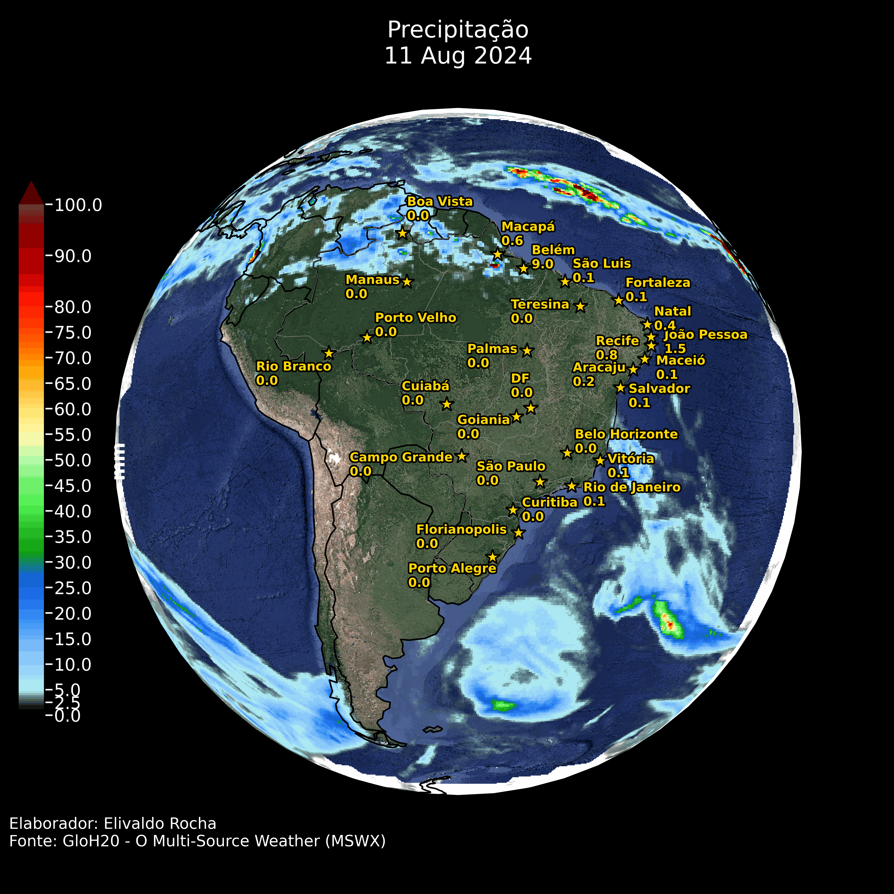
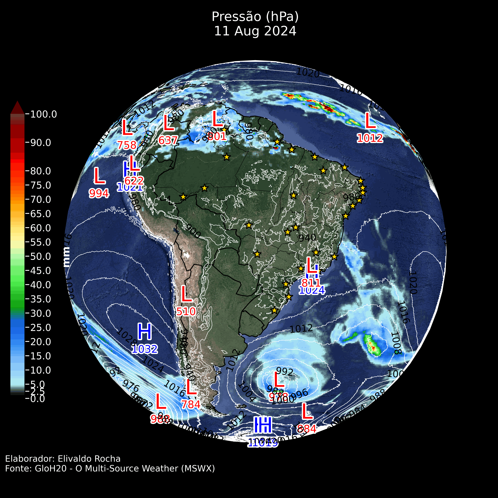
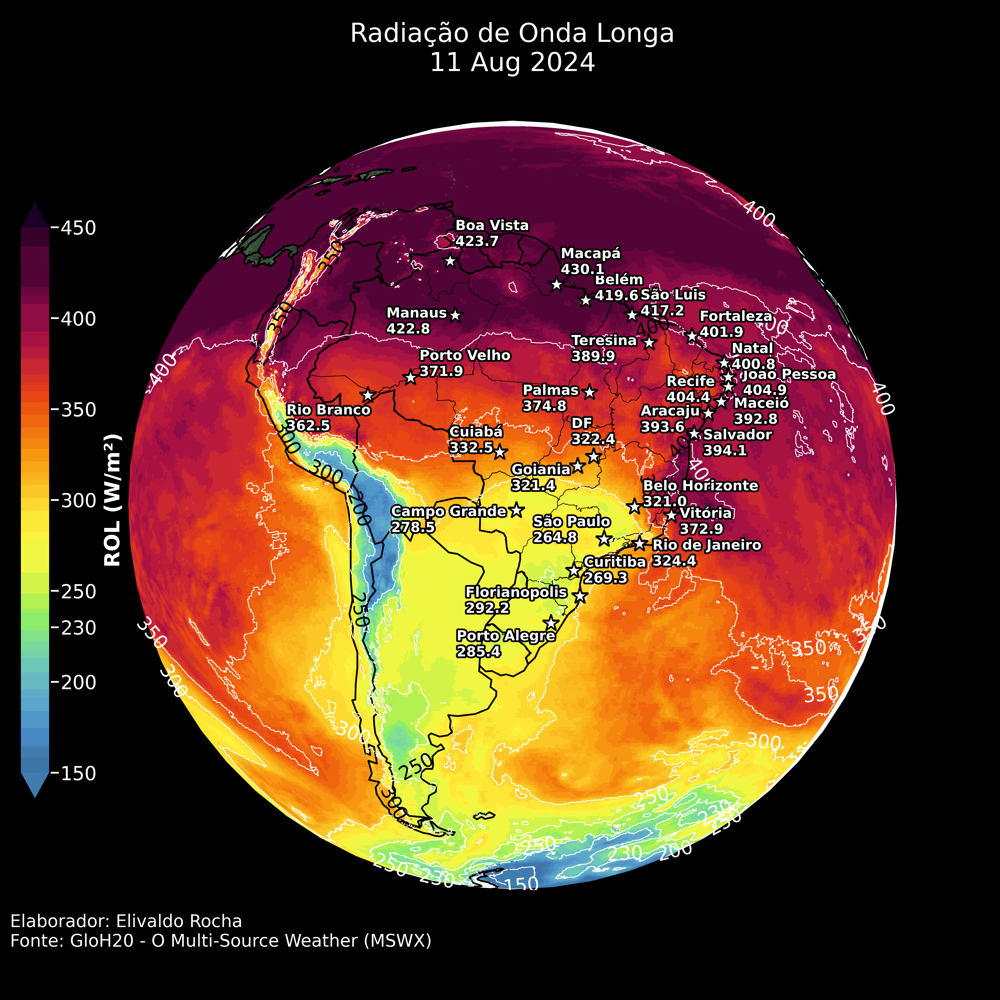
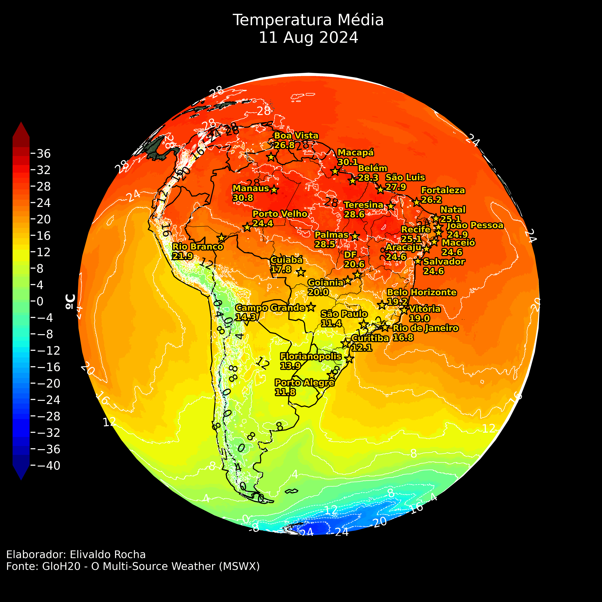
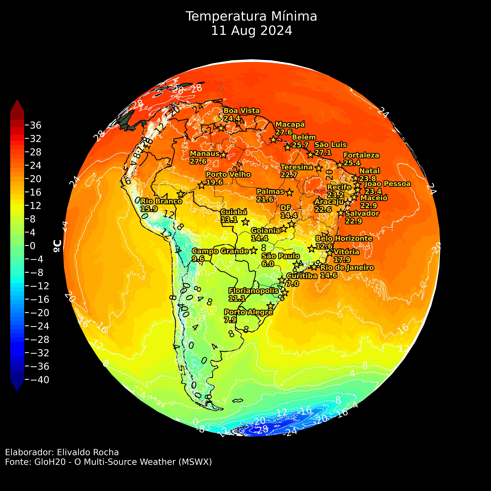
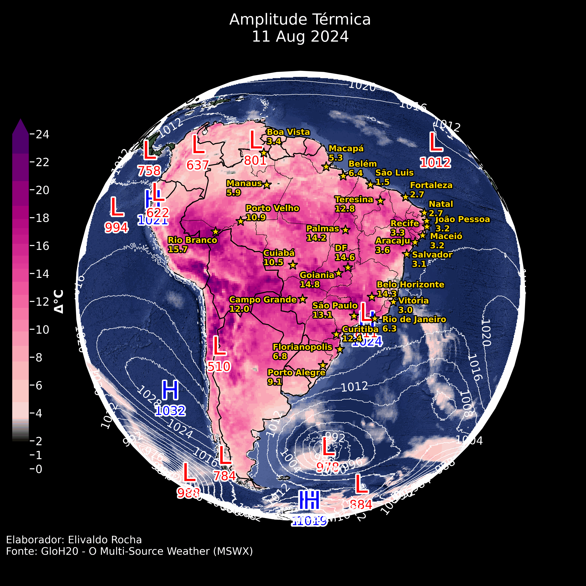
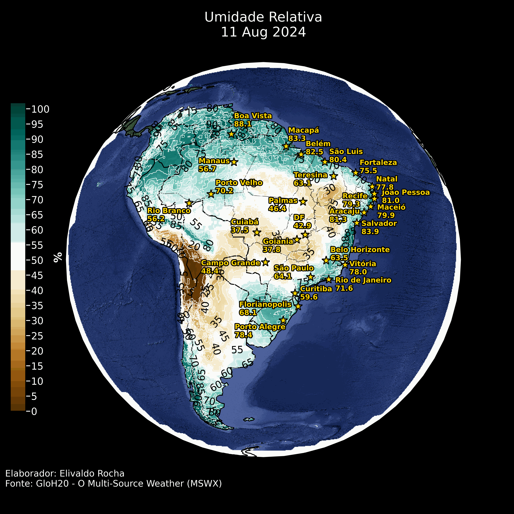
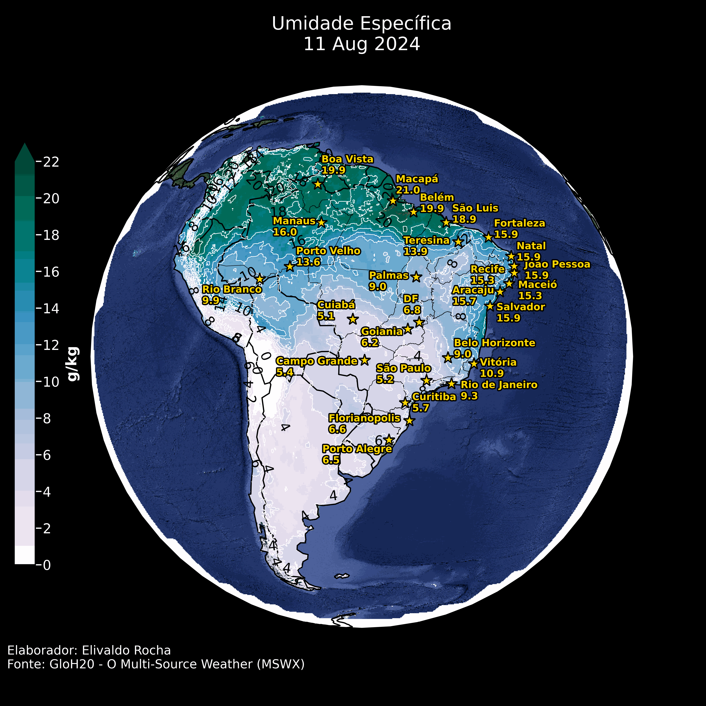
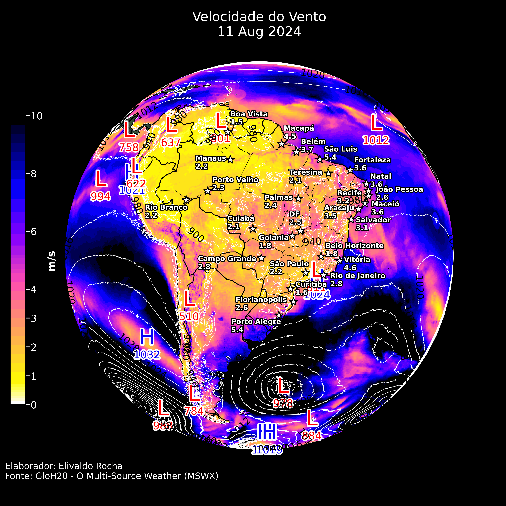

Clique nas setas ou para visualizar as previsões.
Resumo:
O dia 11 de agosto de 2024 aponta para condições de tempo seco na grande parte do Brasil, com exceção das áreas do Norte e partes do Nordeste, onde há maior concentração de umidade e ocorrência de chuvas. A influência dos sistemas de baixa pressão sobre o Oceano Atlântico e o Pacífico deve ser monitorada, pois pode causar condições adversas em áreas costeiras e, possivelmente, no sul do Brasil. As altas temperaturas e baixa umidade relativa no Centro-Oeste e Sudeste podem intensificar a sensação de desconforto térmico e aumentar o risco de queimadas.